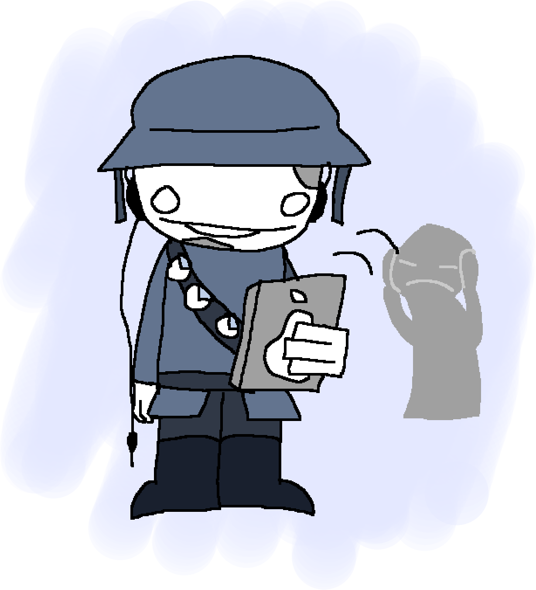

We don't allow micspam for most players outside of proximity voice chat as it can render global voice chat difficult to use, especially for admins who cannot mute people.
Micspam is anything that isn't your voice being transmitted through voice chat such as music, voice clips, audio feedback, and excessive echo. It also includes voice communications that are too loud or distorted, which aren't allowed in global or proximity.
We may also consider verbal spamming or other communications a form of micspam, depending on the situation.
Micspamming can result in a mute or other action by admins. We do provide some exceptions through the DJ program.
Thank you for keeping voice chat clean.